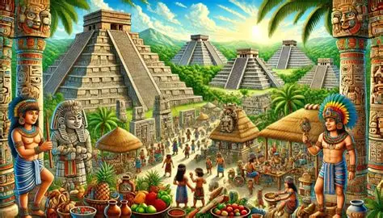

La cultura maya fue una de las más importantes civilizaciones mesoamericanas. Habitó la Península de Yucatán desde 2000 a. C. hasta la conquista de los españoles, en 1527 d. C. Los pueblos mayas desarrollaron múltiples estados independientes, organizados en torno a centros urbanos con construcciones imponentes, templos piramidales, observatorios astronómicos y grandes palacios. Fueron temibles guerreros que influenciaron las culturas de toda la región mesoamericana. Profundizaron los conocimientos sobre los astros y crearon un sistema de escritura complejo, un sistema numérico propio y nuevas técnicas de cultivo para perfeccionar la producción de alimentos.

La cultura maya es importante porque representa una de las civilizaciones más destacadas de Mesoamérica. Sus conocimientos sobre astronomía, matemáticas, escritura, arquitectura y agricultura siguen siendo reconocidos en la actualidad. Conocer su historia permite valorar las tradiciones, conocimientos y aportaciones que forman parte de la riqueza cultural de México.